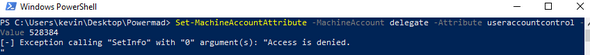

MachineAccountQuota In Action
Let’s take the above rules and apply them to a compromised AD account that has SeEnableDelegationPrivilege. As mentioned in rule 4, even though an account has write access to an attribute, the write attempt is still subject to validation.

However, if you happen to compromise an account with the correct privilege, such as SeEnableDelegationPrivilege, things can get interesting.

In this case, we can use the ‘INVEIGH\kevin’ account, along with MAQ, to create and configure a machine account object capable of performing Kerberos unconstrained delegation. Conveniently, this can remove the requirement for finding an existing suitable AD object for leveraging SeEnableDelegationPrivilege. Basically, we can just make our own through MAQ.
Note, this is one of those scenarios where, if you can, just joining a domain with your own Windows system can make things easier. If you do go that route, just enable unconstrained delegation on the machine account object and leverage it just like you would on a compromised system. The good news is that the process is still very manageable when we use only a machine account.